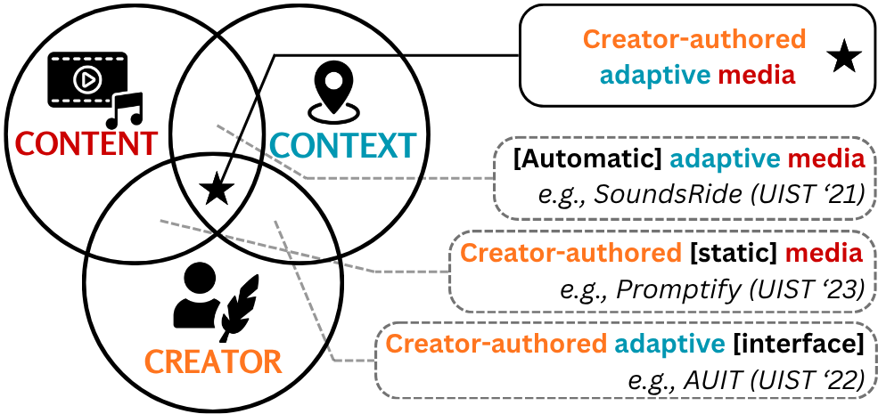

UIST 2026 — ACM Symposium on User Interface Software and Technology · To appear

We present C3, a creator-centered paradigm for adaptive media authoring that gives artists explicit control over how their work adapts across creators, content, and context. We instantiate C3 in songwriting through MultiVerse, a system for steering adaptive lyrics while preserving musical structure and creative intent.
To show how C3 works in MultiVerse, we walk through a creator iteratively authoring steering controls, aiming to adapt the line to each listener while keeping the rhyme scheme, the theme of isolation, and a connection to each listener's context. Each phase adds a control, and you can hear the sung result.
Original
The line the creator wants to adapt, from a song about isolation and feeling lost.
“My dog just died, my friend hates me, I saw myself on MTV.”
No constraints
Adapting for a listener persona, Anna, a graduate student, with no controls shifts the line entirely toward her and loses the artist's intent.
“Anna bends sound into code, chasing music that learns to listen.”
Content structure
The creator adds structural controls so the line fits the song: the last two words must rhyme, and no word is split across rhythm clusters.
“Anna codes songs with heart and art, she builds new systems from the start.”
Creator intent
The creator adds intent, evoking isolation and feeling lost, and locks the words “hates me” so the line keeps the song's meaning.
“The systems I built now hate me, and lock me in this frequency.”
Audience context
A contextual query surfaces the listener's recent hardship, Anna's paper was rejected, and the line is grounded in it.
“My paper died, my lab hates me, reviewer writes with cruelty.”
Generalize across audiences
The same controls are previewed for other listeners, like Elena, an indie game designer, adapting to each context while preserving the rhyme, theme, and structure.
“My co-dev left, my mod hates me, late nights alone, streets feel empty.”
@inproceedings{wang2026multiverse,
title = {MultiVerse: A Creator-Centered Approach to Steering Context-Adaptive Lyrics},
author = {Wang, Alexander and Donahue, Chris and Lindlbauer, David},
booktitle = {Proceedings of the 39th Annual ACM Symposium on User Interface Software and Technology},
year = {2026},
doi = {10.1145/3830398.3830530}
}